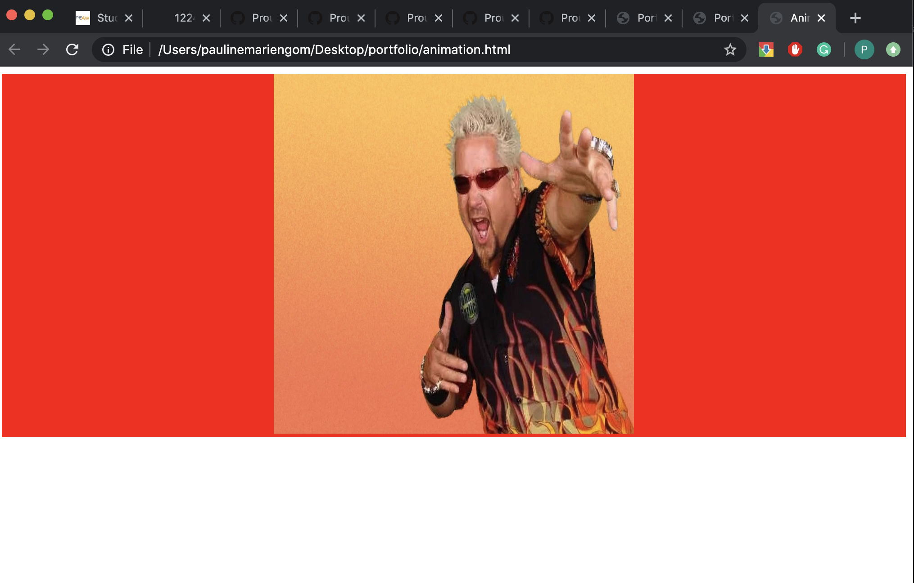

Pauline's Portfolio
projects
part 3 - animations, transitions and guy fieri


click image to go to webpage

this was the first assignment where we learned abut transitions. it was really interesting
learning how to make transitions with different colors to make for a more fun experience.
the animation is the movement of the image, and this was acheived by using the key frames
option. this taught me about other features that i could use as well, and featured heavily in my future
projects.